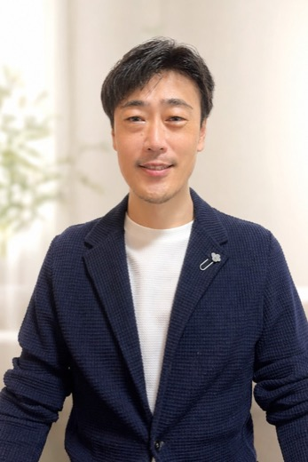
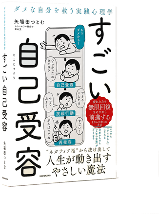

資格・顔出し・時間に不安がある、聞き上手なあなたへ
カウンセラー起業
時間、自信、順番、届け方、パソコン。人によって止まる理由は違い、効く進め方も違います。12の質問に答えると、あなたのタイプと進め方が、矢場田からの「お手紙」になって届きます。
YOUR GUIDE


『すごい自己受容』Amazonのレビュー 星4.4（33件）
有限会社ライフビジョン 代表取締役 / カウンセラー専門コンサルタント
この診断を作った矢場田は、もともと、人前に出るタイプではありません。高校1年生のときに、対人緊張から不眠症になり、不登校になりました。21歳のときには、難病の潰瘍性大腸炎と診断されています。
10代から20代にかけて悩み続け、研究し続ける中で「こころの悪循環を断ち切るセラピー」を開発。多くのカウンセリングを重ねる中で、そのノウハウを体系化し、2018年に「安心安定のカウンセラー起業®」を始めました。
矢場田のもとには、毎日のように相談が届きます。その相談の中で、止まる場所が人によって違うことが見えてきました。この診断は、その違いを先に言葉にして、あなたに合う進め方を見つけるために作りました。
著書
WHAT YOU WILL KNOW
この診断は、あなたを「判定する」ものではありません。いまのあなたが、どこで止まりやすいのかを言葉にして、そのタイプに合う進め方を、矢場田が手紙の形でお返しします。
結果は、次の5つのタイプのどれかです。
結果のお手紙には、「こんな場面、ありませんか」「止まりやすい本当の理由」「このタイプの進め方3つのステップ」「同じタイプの先輩の動画と言葉」が入っています。
LOOK BACK
これは、特別なことではありません。やさしい人ほど、慎重に、そして自分の価値を小さく見積もります。聞き上手で、人の話を最後まで聴ける。それは、カウンセラーとして大きな強みです。
しかも、止まる原因は、やる気や才能の不足ではないことが多いのです。自分に合わないやり方を、がんばって続けているだけかもしれません。人によって止まる場所が違うから、まずタイプを知ることが先です。合わない努力を続けるほど、自信をなくして、動けなくなってしまいます。だから、頑張り方を増やす前に、自分の止まり方を知ってください。この診断は、そのためにあります。
SAMPLE
12問に答えると、診断結果が出たことをお知らせする封筒が届きます。お名前とメールアドレスを入れると、封筒が開いて、あなた宛てのお手紙が読めます。
お手紙には、あなたの回答から選んだタイプと、そのタイプに合う進め方が書かれています。たとえば、次のような中身です。
RECOMMENDED BY
矢場田の公式サイト「推薦」ページに掲載している、推薦者ご本人の文章からの抜粋です。
矢場田さんはカウンセラーの中でも書籍も出版されていて実績も充分で非常に注目されている存在です。
「カウンセラービジネス」を教えてくれる人が極めて稀だからです。この問題を解決してくれるのが矢場田先生です。
決して受講生に行動を強要したり、無理をさせたりすることがなく、それでいて受講生に卓越した結果を出させている点です。
カウンセラー初心者ほど矢場田さんから教わることをお勧めします。
難しい経営用語や仕組みを日本一わかりやすく説明してくれます。
理屈だけのコンサルタントが多い中で自らが実践してきた経験を基に指導するコンサルティングは説得力が圧倒的に違います。
VOICES
この診断の結果と進め方は、先輩たちが実際にたどった道をもとにしています。動画の再生ボタンを押すと、ご本人の言葉が聞けます。
受講生のインタビュー動画（YouTube）と紹介文から選びました。個人の感想であり、成果を保証するものではありません。掲載前に、矢場田さんを通して本人の確認を取ります。
HOW IT WORKS
FAQ
はい。診断も、結果のお手紙も無料です。
いいえ。働き方を考えるためのもので、医学的・心理学的な診断ではありません。いまのあなたが止まりやすい理由と、合う進め方を知るための診断です。
診断はニックネームで受けられます。お手紙の中でも、顔を出さずに進めた先輩の例をご紹介しています。
スマホでも、約2分で受けられます。パソコンが苦手な方のタイプも用意しています。
結果のお手紙をお届けするために使います。配信は、いつでも解除できます。
個人の感想であり、成果を保証するものではありません。進め方は人によって違います。
START HERE
診断は無料です。矢場田からのお手紙が、あなたを待っています。
※携帯メールアドレス・iCloudメールは届かないことがあります。それ以外のアドレスでご登録ください。